About
Projects
Manifesto
Life
Jobs
Contact Us
1 • DO YOU HAVE A TALENT?
The CorE of what we do is about identifying relevant bits of information and stories from your life to help you help yourself. For these reasons, we simply cannot start working without you...
The first step of our methodology consists in determining what type of talents you have at your disposal : in which repositories they fit in, whether they are consistent, and naturally, what is the story told by your experiences.
2 • HAVE YOU GOT TIME?
Our approach allows us to really embrace the intricacies of a talent and bring out the most from it. That means we take the time to understand your issues, your philosophy, your insecurities, to conceive the best/worst case scenarios and develop the most compelling "YOU" possible.
Creating a data visualization is a committed project that requires time. The vast majority of our projects are highly qualitative and last between 1 and 12 months.
3 • ARE YOU READY TO WORK WITH US FROM THE VERY BEGINNING?
Before we can refine any mockup, we must carry out an in-depth process to thoroughly understand your objectives, In the meantime, we strongly believe in associating our clients along a potential employer, taking in their feedback, requests and choices to ensure your skillset matches their expectations.
This is why, at the beginning of a project, we cannot come up with how your profile can look like.
4 • ARE YOU READY FOR A CHALLENGE?
In addition to providing tailored, refined trainings, our ambition is to help our clients rethink the way they approach work and leverage its value in life.
As a result, our suggestions often challenge the way clients see work: they raise awareness on the necessity to preserve a sustainable work ecosystem, and advocate the need for a business decision making process that leverages the insight of data.
Beyond our time-bounded collaboration, our ambition is to prepare your company and its individuals to the upcoming era of smart work.
5 • DID YOU TICK OUR CHECKLISTS?
We invite all prospective clients to get in touch, should you simply wish to know more about our approach or submit a nascent improvisation plan.
Following an initial conversation, we typically invite our contacts to fill out a couple of checklists that capture some key information about the purpose and some technical details about themsleves. Answers are protected by a non-disclosure agreement.
Establishing a quote for a project requires to consider the multiple variables that come into play: skilled training, and connections, complexity of working together, appropriate trainer choices, implementation and improvisation index. Those details greatly help us appreciate the size of the project as well as its duration and budget.